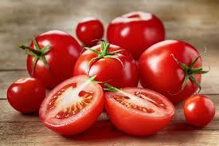
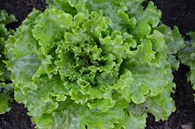

Mercado do Campo
Compre produtos frescos direto do campo

Tomates Orgânios
R$ 8,00/Kg
Fazenda do Seu Zé

Alface Fresca
R$ 4,00/unidade
Sítio Balacubaco

Cenoura Orgânica
R$ 6,00/Kg
Fazenda Chumerei